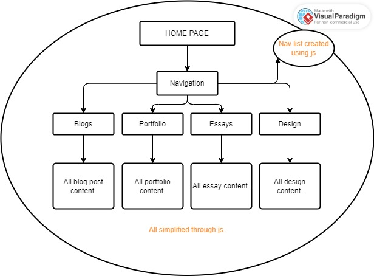
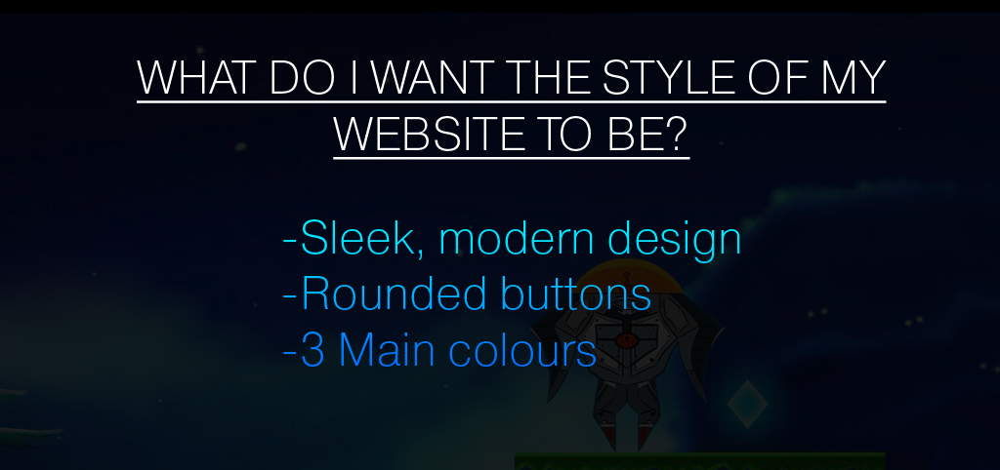
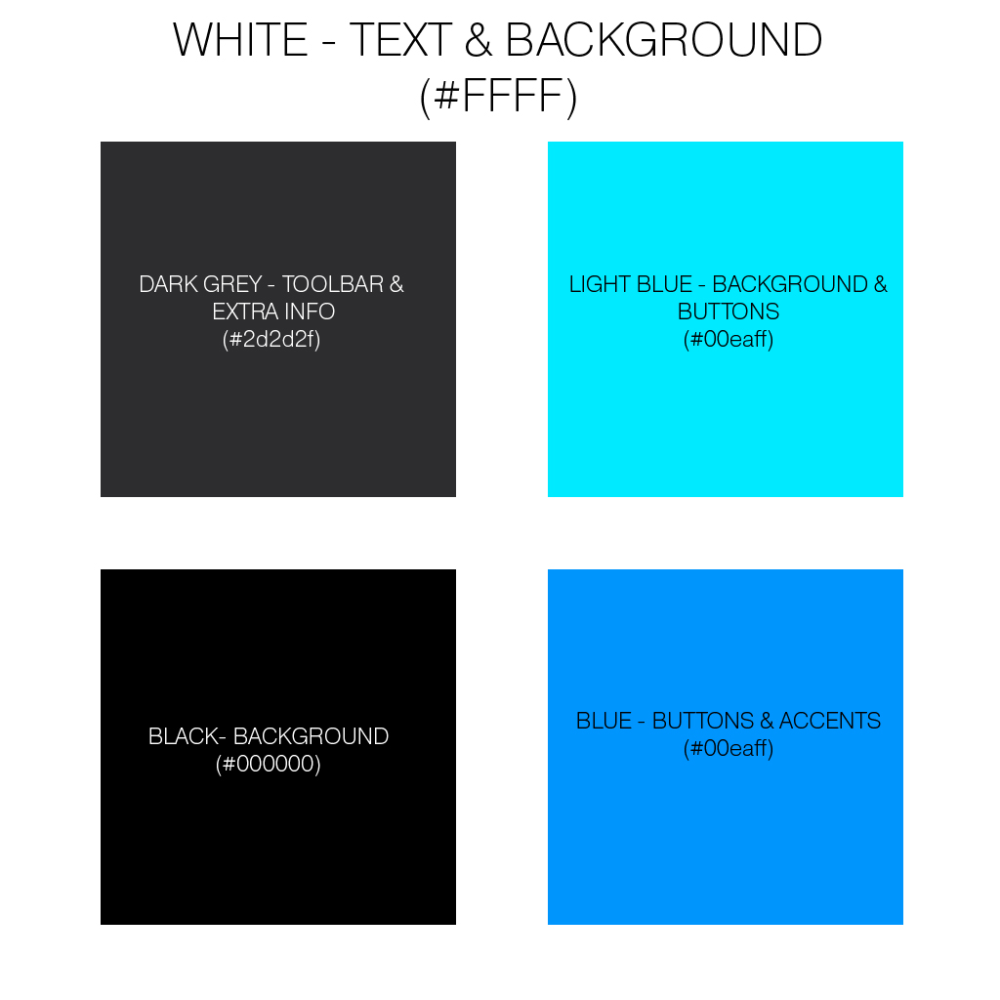
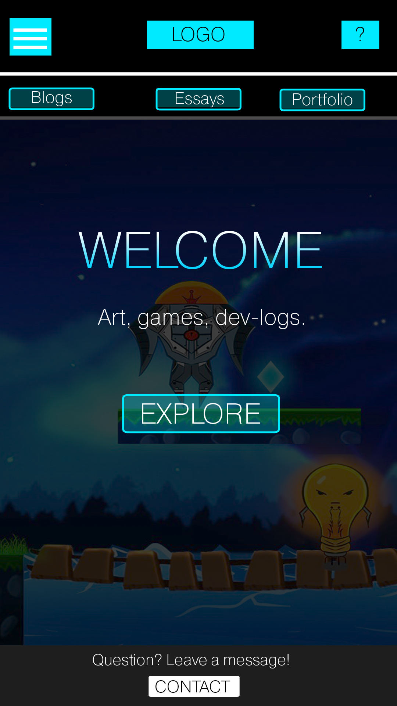

DESIGN
Welcome to the Design Process section. Here you will find my wireframes and design process!
Wireframes
Inital sketches of wireframes, basic layout and placement
Basic User Flow
The basic user flow of my wesbite. Users land on the homepage and can access all other pages from there. The homepage acts as a hub with branches of informtation.

Information Structure
How information is structured and will be accessible to the user. Emphasis on all main pages being accessible through the homepage. Javascript used to make navigation easier by allowing easy referencing.

Style Guide
The simple principle that I want my website to follow in terms of design. This summarises what my website should look like on any page, at anytime. At all points through browsing, users should be able to observe this design goal. Will begin implementing it during CSS.
Font: Pragmatica, Aptos
Colour Scheme: Primary - #000000 (Black), Secondary 1 - #2d2d2f (Dark Grey), Tertiary - #00eaff (Light Blue), Accent 1 - #00eaff (Blue)
Button Shape: Rounded corners with a border radius of 5px
Alignment: Main content aligned to center. Extra information on sides.
Images: Images will mainly be used as illustrations or additional content, giving the viewer something to look at the further explains the words they are reading.

Colour Scheme
The colour scheme my website should have. 3 Main colours, with an extra accent colour. I think this dark and blue themed design communicates the idea of a modern website, with the blue being reminiscent of neon lights in a semi-futuristic setting.

Final Wireframes/Design
Ideas for how the final website design should look like.


Implementation Notes
For Website 3, I mainly focused on getting the basic colour scheme. The font has been changed to a Code Pro, Sans-Serif combination, due to it looking simpler. I also made the blue accents darker, as white text was slightly difficult to read on them. For website 4, I look forward to adding the finishing touches to make my website look more like my sketches!